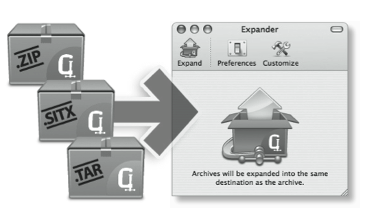
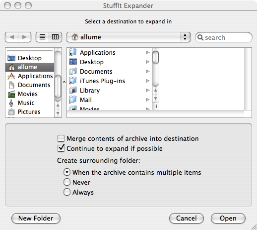

Using StuffIt Expander®
StuffIt Expander is easy to use! To expand a file with StuffIt Expander, simply drag and drop the file you want to expand onto the StuffIt Expander icon. For quick and easy access, you can drag and drop the StuffIt Expander icon onto the Dock so that it's handy whenever you need to use it.
If Expander is closed, the program will launch, expand your files and quit. You can also expand files with StuffIt Expander by dragging files into the StuffIt Expander Drag Window, as in the figure below. Just launch StuffIt Expander and the Drag Window will appear. Dragging and dropping files on Expander's icon or Drag Window is the recommended method since double-clicking the file you want to expand will not launch Expander in many cases.

You can expand more than one file by dragging multiple items onto StuffIt Expander.
Using the packaging system analogy, when Expander finishes "opening the package", the contents will be located in the same directory as the original files (this setting can be changed in the preferences).
If there is a "package within a package" that Expander recognizes, it will continue to expand the resulting files (this setting can be changed in the preferences).
Note: If the Mac OS does not recognize that a file can be expanded by StuffIt Expander, you may still be able to expand it. Even if the file you want to expand doesn't have a StuffIt icon, drag and drop it onto StuffIt Expander to see if it can be expanded. If it cannot, StuffIt Expander may, in some cases, present a dialog offering more information about what program might be needed to open the file.
Expanding Segmented Files
StuffIt Expander can join several types of segmented files. To join a segmented file, you must have all of the segments in the same location (ie: a folder). To join the segments into a single file, drag the first segment of the set onto StuffIt Expander. When Expander is finished joining the segments, the resulting file will be located in the same directory as the original segments (this setting can be changed in the preferences).
If the segmented archive you want to expand is stored on multiple CDs or DVDs, you can expand the segments one by one. First insert the disk that contains segment 1, and then drag and drop that segment onto StuffIt Expander. After StuffIt has finished expanding the first segment, you will be prompted to insert the disks that contain the remaining segments in the set.
Expanding Encrypted Archives
On occasion you may receive archives that have been encrypted with a passphrase. StuffIt Expander will prompt you to provide the passphrase before the files are expanded. If you do not have the correct passphrase you will not be able to access the files stored in the encrypted archive.
What's in the Package?
While StuffIt Expander can help you to open the compressed, archived, or encoded files (the packages) that you encounter, once the package is opened, Expander's job is done. StuffIt Expander has no knowledge of what's inside the archive. You will still need an application installed on your Macintosh to view, edit, or otherwise work with the files you have expanded.
Tip: If you have questions about files expanded with StuffIt Expander, we suggest that you contact the party that posted or sent you the files to find out what program is needed to open them.
One Time Preferences
If you hold down the "Option" key while dragging files to StuffIt Expander, you will be presented with a special "One Time" Preferences dialog.

This allows you to change preference settings that apply only to the current operation. When you click "OK" to dismiss the Preferences dialog, your file would be expanded to this new location for this one time. Future expansion operations will use the regular preference settings.
Version Checking
StuffIt Expander now uses Sparkle for version checking and self-updating. If there is a new version of Expander available, you will receive an alert. You can choose "Install Update" which will download the new version, quit Expander, and install the new version in its place; you can choose "Remind Me Later" which will dismiss the dialog, but it will reappear the next time you launch Expander; or you can choose "Skip This Version" which will dismiss the dialog and prevent it from reappearing until the next revision is available.
Growl
If you have the notification system Growl installed on your machine, Expander will use it to display alerts and other messages.
More Expander Hints and Tips
If you are exchanging files with a Windows user, StuffIt Expander can help to make the files you receive ready for use on your Macintosh. In addition to expanding the contents of a Zip archive from a PC computer, StuffIt Expander will also automatically translate the file extension of a Windows file into a Macintosh type and creator code. This means that when you double click the file it should open in the correct application (assuming, of course, that you have an application able to open the kinds of files you expanded.)
Sometimes a file you have expanded will not open with a simple double-click. In such cases, if you know (or have been told) what kind of application should be able to open the file, try opening the file from within that application. For example, if you think the file should open in your word processor, launch your word processor, go to the File menu, choose Open, and in the window that appears, select the file you are trying to open.
Back to Help Home Page
Copyright © 2007 Smith Micro Software, Inc. All rights reserved.